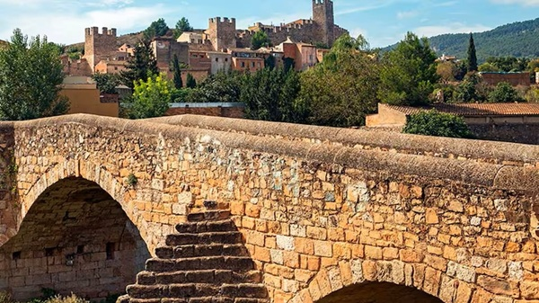

Los pueblos mas bonitos de cataluña
Los pueblos mas bonitos de cataluña

Montblanc es otro de los pueblos medievales más bonitos de Cataluña. Está rodeado por una impresionante muralla de 1.700 metros que todavía conserva las torres de vigilancia alzadas durante la Edad Media
En 1947, el centro de la ciudad fue declarado Conjunto Histórico por su arquitectura románica y gótica perfectamente conservada, sus iglesias escondidas entre las estrechas calles del centro y sus encantadoras plazas. Además, la tradición catalana asegura que "Montblanc fue el escenario en el que tuvo lugar la famosa leyenda de Sant Jordi y el dragón" ( descargar ), una historia que los habitantes del pueblo recuerdan y celebran cada primavera.